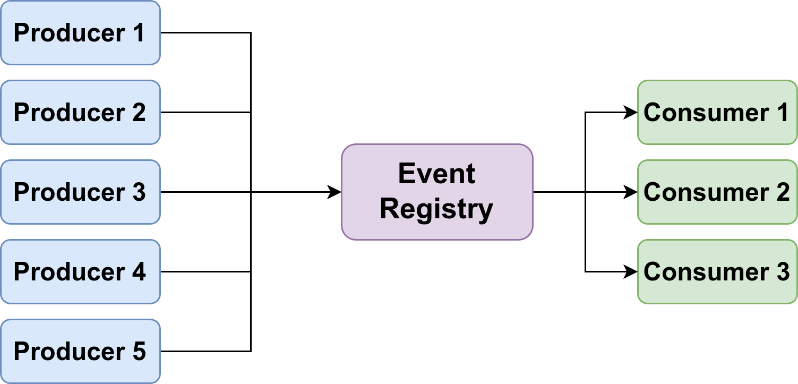
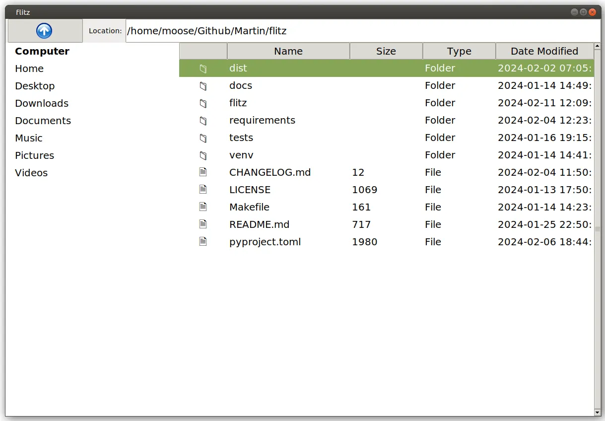

{kind=link}

An event-driven software architecture can help you write cleaner code. Most software engineers are likely familiar with pre-defined event systems such as those provided by frontend frameworks/languages: keypress in JavaScript, bind in Tkinter, or keyPressEvent in PyQt/PySide. You might also know Django Signals, or have heard of Apache Kafka or Google Cloud Pub/Sub in the context of distributed systems.
An event-driven software architecture does not have to be that complicated.
The components of an event-driven system are straightforward: You have events, producers of those events, and consumers of the events. Then you need some glue code that forwards the events from the producers to the consumers. This is called the event registry.
Building Event-Driven Software
I recently started building the flitz file manager to dip my toes into the development of graphical user interfaces with Python. I started with the Tkinter framework but recognized it was not a good match. Porting to Qt is hard as I have a tight coupling with Tkinter.
{kind=link}

For example, when changing the current path via the URL bar, I want the listed documents to be changed. Flitz also has an “up” button. When it is clicked, the current path shown in the URL bar is changed and the shown documents in the details pane are changed.
Conceptually, the code could look like this:
class FileExplorer:
def __init__(self):
self.current_path = Path(".")
# Show the UI widgets
details_view = DetailsView(self)
url_bar = UrlBar(self)
up_button = UpButton(self)
class UrlBar:
def __init__(self, root):
self.root = root
self.text = str(self.root.current_path)
def on_keypress_enter(self):
# Let the main application know that the path changed
self.root.current_path = Path(self.text)
# Trigger follow-up changes
self.root.details_view.refresh()
self.refresh()
def refresh(self):
self.text = str(self.root.current_path)
class UpButton:
def __init__(self, root):
self.root = root
def on_press(self):
# Let the main application know that the path changed
self.root.current_path = self.root.current_path.parent
# Trigger follow-up changes
self.root.details_view.refresh()
self.root.url_bar.refresh()
class DetailsView:
def refresh(self):
"""Show the files from the root.current_path."""
You can see that there is logic duplication in UpButton.on_press and UrlBar.on_keypress_enter. Such duplicated code becomes harder to maintain as the application grows. At some point, someone will forget to update/refresh one GUI widget of the application.
Instead, you can define a set_current_path function:
class FileExplorer:
def __init__(self):
self.current_path = Path(".")
# Show the UI widgets
self.details_view = DetailsView(self)
self.url_bar = UrlBar(self)
self.up_button = UpButton(self)
def set_current_path(self, current_path):
self.current_path = current_path
self.details_view.refresh()
self.url_bar.refresh()
class UrlBar:
def __init__(self, root):
self.root = root
self.text = str(self.root.current_path)
def on_keypress_enter(self):
self.root.set_current_path(Path(self.text))
class UpButton:
def __init__(self, root):
self.root = root
def on_press(self):
self.root.set_current_path(self.root.current_path.parent)
class DetailsView:
def refresh(self):
"""Show the files from the root.current_path."""
The next part we want to improve is the locality of the code. Meaning that one component should have all of its code in one place. Having several unrelated lines in set_current_path makes it harder to change those components and inspect if they do the right thing. I mean, how do you know if there is a component that should be touched in set_current_path without checking the code of every single component?
from pathlib import Path
# events.py
class Event:
def __init__(self, name):
self.name = name
self.listeners = []
def consumed_by(self, listener):
self.listeners.append(listener)
def produce(self):
for listener in self.listeners:
listener()
current_path_changed = Event("current_path_changed")
# Remaining code:
class FileExplorer:
def __init__(self):
self.current_path = Path(".")
self.event_registry = {} # Event registry to hold component listeners
# Show the UI widgets
self.details_view = DetailsView(self)
self.url_bar = UrlBar(self)
self.up_button = UpButton(self)
def set_current_path(self, current_path):
self.current_path = current_path
current_path_changed.produce()
class UrlBar:
def __init__(self, root):
self.root = root
self.text = str(self.root.current_path)
current_path_changed.consumed_by(self.refresh)
def on_keypress_enter(self):
self.root.set_current_path(Path(self.text))
def refresh(self):
self = self.root.url_bar
self.text = str(self.root.current_path)
print(f"UrlBar refreshed")
class UpButton:
def __init__(self, root):
self.root = root
def on_press(self):
self.root.set_current_path(self.root.current_path.parent.resolve())
class DetailsView:
def __init__(self, root):
self.root = root
current_path_changed.consumed_by(self.refresh)
def refresh(self):
"""Show the files from the root.current_path."""
print(f"Refreshing details view with files from {self.root.current_path}")
# Example usage:
explorer = FileExplorer()
explorer.up_button.on_press()
You can also use a library like blinker for that.
And that’s it. You’ve seen an event-driven system 🎉
In this case, the registry is every single Event object.
That’s simple — why does Apache Kafka exist?
Kafka is used in large distributed systems. That especially means that you have a network with latency and errors. Consumers might come and go; just like producers.
Gotcha, but why do we need blinker?
-
Multi-threading
-
Disconnecting Consumers
-
Attached data: In this simple example the event didn’t come with any data. That is different in many use cases.
Terminology — many words for the same concepts
Events and signals are the same thing. Similarly, we have a couple of pairs that belong together:
| Event | Action | Follow-up | Comment |
|---|---|---|---|
| Event | Publisher | Subscriber | Apache Kafka, Google Pub/Sub |
| Event | Producer | Consumer | RabbitMQ, Spring Cloud Stream |
| Event | Dispatch | Listener | JavaScript |
| Signal | Sender | Receiver | Blinker |
Pitfalls of Event-Driven Systems
-
Order: You should design your event-driven system in a way that the order of execution of the consumers does not matter.
-
Infinite Loops: Event A might cause Event B which causes Event A.
TL;DR
-
What: Event-driven systems have events, parts of code that produce those events, and other parts that consume those events.
-
Why: It’s useful to decouple the senders from the receivers. That increases maintainability.
-
How: The simplest way to implement event-driven software is by using global objects for the signals. Those are then used by the producers and automatically call the consumers. Libraries like blinker can help. If you are in a distributed system things become more complicated.